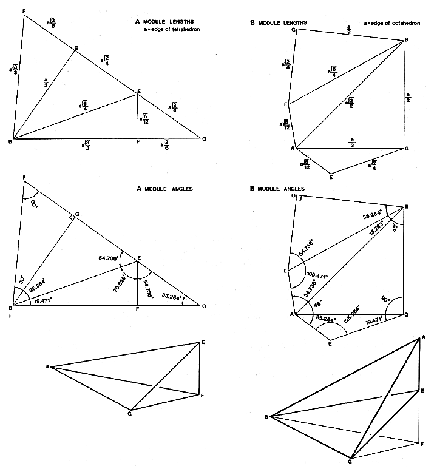

|  |
| Fig. 986.421 A and B Quanta Modules. The top drawings present plane nets for the modules with edge lengths of the A Modules ratioed to the tetra edge and edge lengths of the B Modules ratioed to the octa edge. The middle drawings illustrate the angles and foldability. The bottom drawings show the folded assembly and their relation to each other. Tetra edge=octa edge. (Compare Figs. 913.01 and 916.01.) |